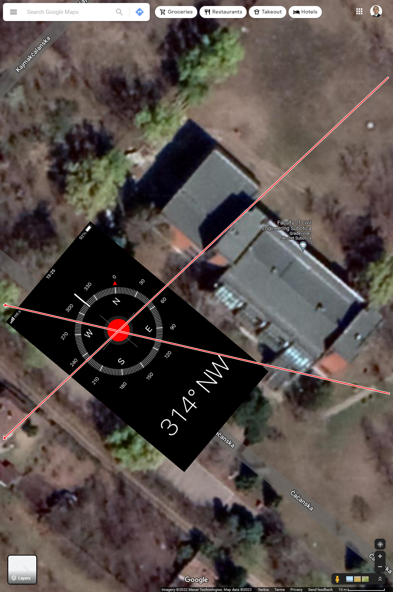
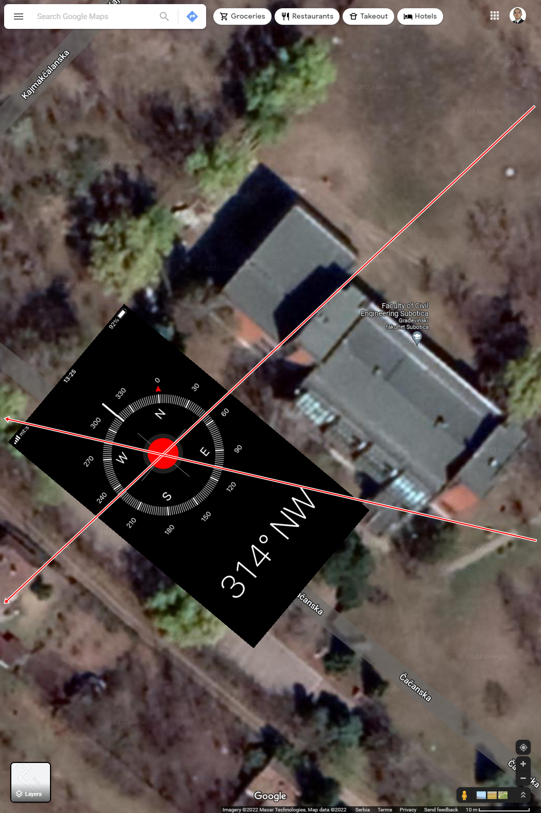
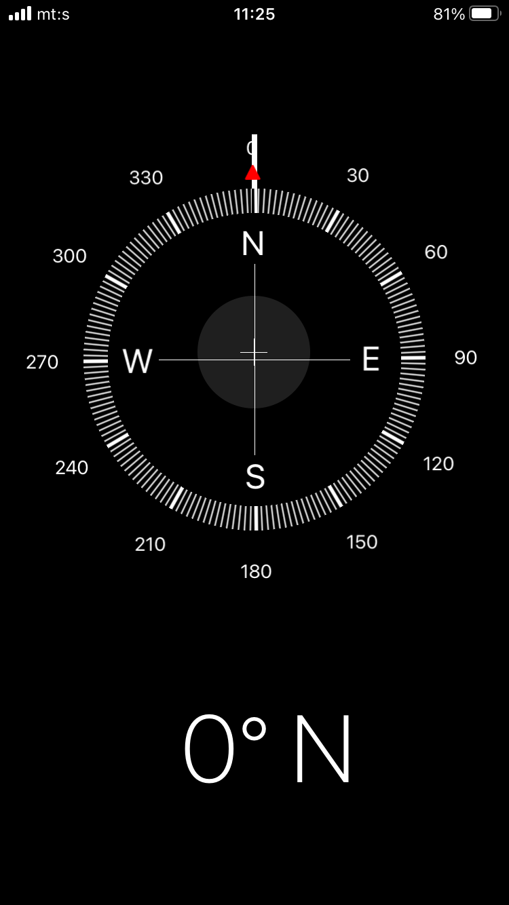

GFS meteorološka stanica
Komentar: Izdvojeni video prilozi su javno dostupni i ovde su podržani u cilju šireg saznanja o uticajima dejstva vetra u građevinskom konstrukterstvu na primeru visokih zgrada i mostova.
Comment: Selected videos are publicly available and are supported here in order to better understand the effects of wind in building construction on the example of tall buildings and bridges.
-
-
-
-
-
-
-
-
-
-
-
-
-
-
-
-
-
-
-
- B.S. Taranath: Tall building design, Taylor & Francis Group, LLC, 2017.
- E. Simiu, D.H. Yeo: Wind Effects on Structures, JohnWiley & Sons, 2019.
- A. Kassimali: Structural Analysis, Cengage Learning, 2010.
- F. Udoeyo: Structural Analysis.
-
-
-
-
-
-
-
Rheologic GmbH:
Interactive Urban Microclimate - solar, humidity, wind, apparent temperature.
Literatura
Propisi
Ostalo
Vazduh
T [°C] | RH [%] | v [m/s]
Stranicu održava i ažurira prof. dr Ilija M. MILIČIĆ, od 01.05.2018. godine.
Analizirani i ažurirani podaci su dana 14.06.2023. godine, sa meteorološke stanice na lokaciji Kozaračka 2a, Subotica, Srbija, | 46.111647 °N, 19.650137 °E |, u prilog naučnom istraživanju mikro i makro mehaničkom modeliranju dejstava vazduha kao modela opterećenja pri proračunu konstrukcija mostova i visokih zgrada, započetog 2007. godine.
Napomena:
Maja 2023. godine navršilo se pet godina uspešne saradnje sa kolegom doc. dr Ognjenom GABRIĆ, dipl.inž.građ., kome se ovim putem iskreno zahvaljujem na svakoj tehničkoj podršci u okviru ovog započetog istraživanja, u nadi dalje i još uspešnije saradnje. "Hvala Ognjene."
1. TEMPERATURA [ °C ]
2. RELATIVNA VLAŽNOST RH [%]
3. VETAR v [m/s]
Analiza dejstava po mesecima
Temperature -- T [°C]
Relativne vlažnosti -- RH [%]
Tačke rose -- T [°C]
Brzine vetra -- v [m/s]
Mikro i makro mehaničko modeliranje dejstva vetra
GFS_meteo
Pogled iz pravca "W-E"
Pogled iz pravca "S-N"
Ruža vetra za 2023. godinu
GFS_meteo
GPS pozicija meteorološke stanice je:
| 46.111647 °N, 19.650137 °E |, Subotica, RS.


Dinamički model brzine kretanja vazduha
Prilog modeliranju brzine dejstva vetra novim dinamičkim modelom pogodnim za proračun uticaja u konstrukcijama primenom računarskih aplikacija porodice CAA (I.M.Miličić, 2016).
Rezime: Novi dinamički model brzine vetra modeliran je kao mehaničko oscilatorno kretanje vazduha sa podacima dobijenim u realnom vremenu na svakih 10 minuta. Nasuprot predlogu, u cilju poređenja rezultata na slici 2. (CH-3. i CH-4), prikazan je jedan od dosadašnji statističkih modela tretiranog dejstva sa eksperimentalno registrovanom brzinom i pravcem delovanja vetra sa istovetne mikro lokacije - ruža vetra.
Predloženi dinamički model modeliran je uz simultano sprovođenjem FFT analize monitoringom registrovanog signala brzine vetra (m/s). Parametri FFT analize kontinualnog signala je amplituda srednje mesečne brzine sa šest registrovanih učestanosti pri monitoringu brzina vetra sa odgovarajućim faznim razlikama. Prema tome, imamo u frekventnom domenu mogućnost da usvojimo za amplitudu srednju vrednost brzine za proračunsku brzinu vetra. Tako utvrđena vrednost za brzinu vetra predstavlja i dalje ostaje bitan parametar za sračunavanje računske vrednosti pritiska kojim se tretira dejstvo vetra u nacionalnom standardu za potrebe proračuna uticaja u konstrukcijama. Na osnovu kraćeg obrazloženja novog dinamičkog modela brzina vetra je registrovana u stvarnim pravcima s tim što su uglovi tih pravaca preko predznaka u oktantima simuliraju u modelu predviđene harmonike signala brzine vetra.
Prema tome, sa novim predlogom modeliranja brzine vetra nije isključen niti zanemaren pravac dejstva vetra, s tim da ovako modelirano dejstvo ima dinamički karakter.
Na kraju, daje se jedna smernica budućim istraživanjima kojom se predviđa izrada novog programskog okruženje (software) namenjenog za simultanu analizu signala brzine i pravca vetra na postojećoj meteorološkoj stanici ili na svim stanicama ovog tipa za monitoring dejstva vetra.
Ključne reči: Monitoring, dinamički model, kontinualni signal, oscilatorno kretanje, brzina vetra.
pri gustini vazduha, $${\rho=1.225-\frac{H}{8000} \hspace 1cm (kg/m^3)}$$
gde je:
Prema tome, predloženi aerodinamički pritisak je veza između pritiska i brzine vetra saglasno Bernulijevoj jednačini kretanja nestišljivog fluida.
Napomena
Za internu kontrolu u cilju poređenja u okviru ovog istraživanja izabrani su podaci sa sajta, https://globalwindatlas.info.
Dostupni podaci neće biti upotrebljeni za donošenje bilo kakvog rezultata u prilogu usvojenih ciljeva ovog samostalnog istraživanja. Takođe, zbog dostupnosti potrebne grupe podataka i pomenutih mogućnosti koje nam se pružaju, koristiće se i sajtovi: https://www.windy.com, i https://www.spaceweatherlive.com

Poređenje rezultata obrađenih u aplikaciji Matlab 2021a.

.
Slika 1 - Matlab2021a: Analiza dejstava vazduha za januar 2023.
Ruža vetra za 2018. godinu
Kumulativna ruža vetra za 2018. godinu
Ruža vetra za 2019. godinu
Kumulativna ruža vetra za 2019. godinu
Ruža vetra za 2020. godinu
Kumulativna ruža vetra za 2020. godinu
Ruža vetra za 2021. godinu
Kumulativna ruža vetra za 2021. godinu
Ruža vetra za 2022. godinu
Kumulativna ruža vetra za 2022. godinu
N-S Laserski anemometar ArduinoUNO_IMM
